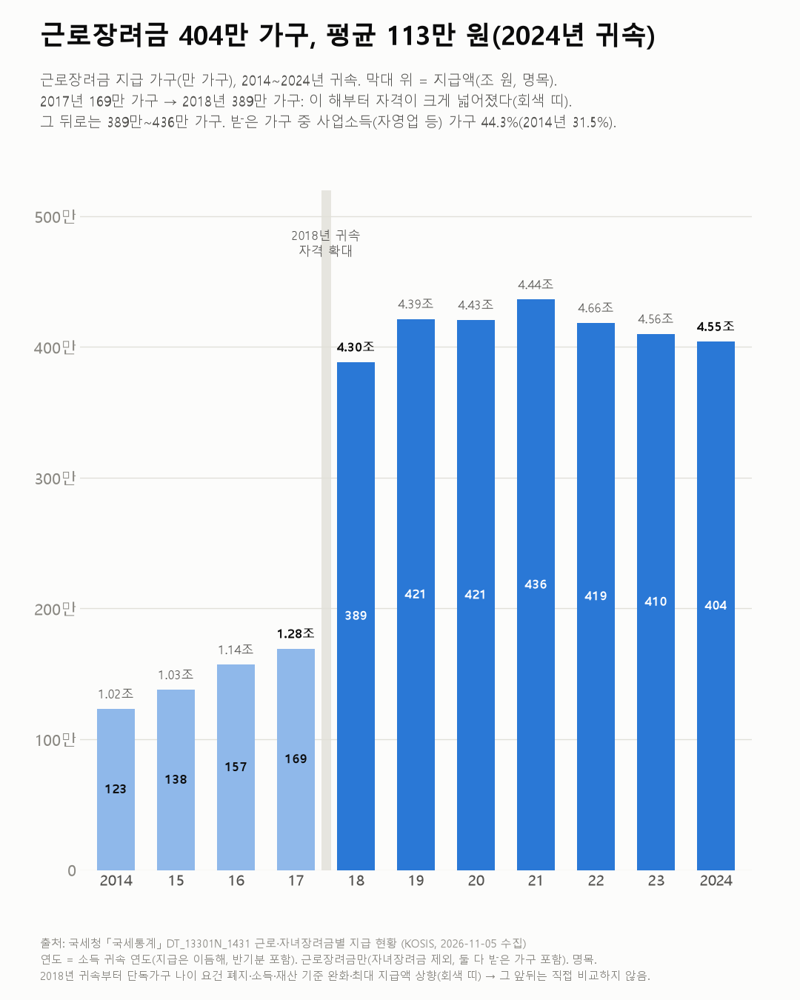
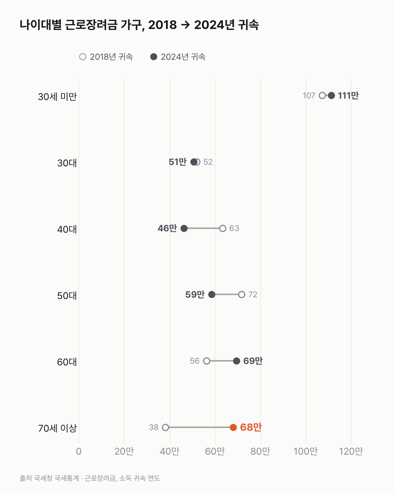

근로장려금 받는 집, 30세 미만이 가장 많아요
2018년 소득분부터는 해마다 389만~436만 가구가 받아요. 받는 집 가운데엔 30세 미만과 혼자 사는 가구가 많아요.

- 2024년 소득분 근로장려금은 404만 가구가 받았어요. 모두 4.55조 원, 가구당 평균 113만 원이에요.
- 받을 수 있는 조건이 넓어진 2018년 소득분에 받는 가구가 169만에서 389만으로 늘었어요.
- 나이로는 30세 미만이 111만 가구(27.5%)로 가장 많고, 가구 형태로는 단독가구가 69.5%예요.
일을 하는데도 나라에서 돈을 받는 집은 얼마나 될까요? 국세통계 지급 현황을 열어 보니 숫자가 한 해에 두 배 넘게 뛴 자리가 있더라고요.
그 자리는 자격이 넓어진 2018년 귀속(2018년 소득분)이에요. 받는 가구가 169만에서 389만으로, 지급액이 1.28조 원에서 4.30조 원으로 늘었어요. 그 뒤로는 389만~436만 가구 사이예요. 그래서 이 선의 높이엔 제도가 바뀐 영향이 크게 들어 있어요.
2024년 귀속은 404만 가구가 받았어요. 모두 4.55조 원, 가구당 평균 113만 원이에요. 2023년 귀속(410만 가구)보다 조금 적어요.
나이대로는 30세 미만이 가장 많아요. 2024년 귀속 111만 가구로 전체의 27.5%예요. 단독가구 나이 요건이 있던 2017년 귀속엔 3만 가구였어요. 3만에서 111만이에요. 가구유형으로는 단독가구가 281만 가구(69.5%)예요.
2018년부터 2024년 귀속까지 가장 많이 늘어난 건 70세 이상이에요(38만 → 68만 가구). 60대도 56만에서 69만으로 늘었어요. 40대(63만 → 46만)와 50대(72만 → 59만)는 줄었어요.
사업소득(자영업 등) 가구 비중은 31.5%(2014)에서 44.3%(2024)가 됐어요. 2024년 귀속 179만 가구예요.

70세 이상 가구가 늘어난 게 이 나이에 일하는 사람이 늘어서인지, 기준이 바뀌어서인지는 이 표로 가를 수 없었어요.
이 숫자는 어디서 왔나요
출처
| 데이터 | 출처 | 쓰임 |
|---|---|---|
| 근로·자녀장려금별 지급 현황 (KOSIS DT_13301N_1431) | 국세청 「국세통계」 | 2014~2024년 귀속, 성·가구유형·나이·부양자녀 × 소득종류 |
- 연도 = 소득 귀속 연도. 2024년 귀속은 2024년 소득 기준이고 2025년에 받았다(반기분 포함).
- 이 글은 근로장려금만 본다(자녀장려금 제외, 둘 다 받은 가구는 포함). 표의 '합계' 가구수는 두 장려금을 더해 겹칠 수 있다(표 주석).
- 2018년 귀속부터 자격이 크게 넓어졌다: 단독가구 나이 요건 폐지(30세 미만 단독가구 포함), 소득·재산 기준 완화, 최대 지급액 상향(보도). 차트 1 회색 띠 앞뒤는 직접 비교하지 않는다.
- 교차 확인: 2024년 귀속 근로·자녀장려금 합계 490만 가구·5조4,197억 원, 2023년 귀속 505만 가구·5조5천억 원은 국세청 발표 보도와 같다.
- 수집일: 2026-11-05 (KOSIS 오픈API).
기준일
2014~2024년 귀속.
한계 4가지
전제 기록
데이터를 보기 전에 적어둔 것, 그리고 보고 나서 바꾼 것
- 전제 기록(premises)(데이터를 받기 전에 작성)를 따랐다. 2018년 귀속 자격 확대를 보도로 확인해 단절로 표시했다.
- 2014년 귀속은 나이 구간 코드가 달라(20세 이상 등) 나이대 비교에서 뺐다.
질문
근로장려금은 일하는 저소득 가구에 주는 돈이에요. 몇 가구가 얼마나 받는지, 2014년 이후 어떻게 변했는지, 어떤 나이·가구가 받는지 열어 봤어요.
새 글 나오면 받아 보기
지금은 RSS로 받을 수 있어요. 메일은 아직 준비 중이에요.